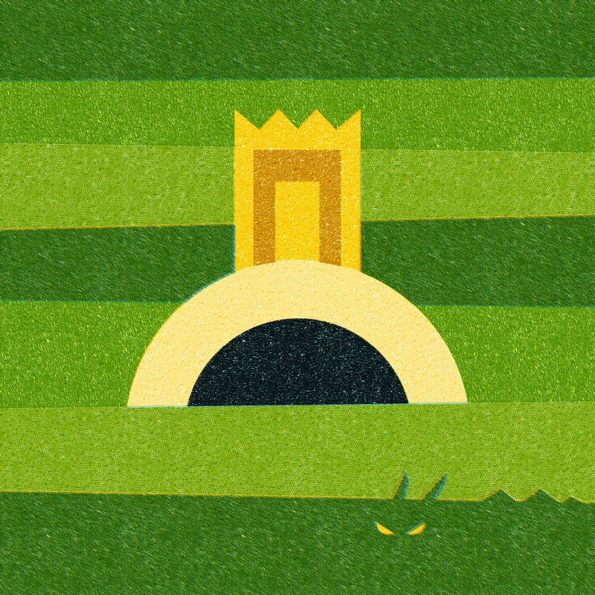

Sessão 15: Relações Entre os DiasSession 15: Relationships Between Days
Principais LiçõesKey Takeaways
Os dias um a três descrevem os ambientes que Deus cria, e os dias quatro a seis descrevem os habitantes. A criação trata de ordenar e povoar os céus e o terreno.Days one through three describe the environments that God creates, and days four through six describe the inhabitants. Creation is all about ordering and populating the skies and the land.
Os dias quatro e seis repetem o tema semelhante dos governantes. O dia quatro trata dos governantes de cima, e o dia seis trata dos governantes de baixo.Days four and six repeat the similar theme of rulers. Day four is about the rulers above, and day six is about the rulers below.
A história culmina na criação dos governantes humanos de baixo que serão parceiros de Deus.The story culminates in the creation of the human rulers below who will partner with God.
O Cosmos de Gênesis 1: Dias Um a SeisThe Cosmos of Genesis 1: Days One Through Six
Dias Um a TrêsDays One Through Three
Os dias um a seis foram organizados ordenadamente como duas tríades que cada uma aborda os problemas apresentados em Gênesis 1:2—desordem e vazio.Days one through six have been neatly organized as two triads that each address the problems presented in Genesis 1:2—disorder and emptiness.
Os dias um a três abordam o problema da criação ser desordenada e desabitada enquanto Deus organiza o cosmos em reinos distintos: os céus acima, o meio céu/terra, e o terreno abaixo.Days one through three address the problem of creation being unordered and uninhabited as God organizes the cosmos into distinct realms: the heavens above, the middle heaven/earth, and the land below.
Dias Quatro a SeisDays Four Through Six
Os dias quatro a seis suprem cada um desses reinos com seus habitantes apropriados: o reino celestial com luzeiros, o meio céu/terra com aves e peixes, e a terra seca com criaturas e humanos.Days four through six supply each of these realms with their appropriate inhabitants: the heavenly realm with lights, the middle heaven/earth with birds and fish, and the dry land with creatures and humans.
No Princípio: Trevas e Águas do Caos Enchem o TerrenoIn the Beginning: Darkness and Chaos Waters Fill the Land
Ora, a terra era selvagem/desordenada (tohu / תהו) e vazia/desabitada (bohu / בוהו)Now, the land was wild/unordered (tohu / תהו) and waste/uninhabited (bohu / בוהו)
COSMOS ORDENADOCOSMOS ORDERED
PREENCHIDO COM HABITANTESFILLED WITH INHABITANTS
Dia 1:Day 1:
“E Deus disse...” luz e trevas / dia e noite“And God said...” light and dark / day and night
Tarde e Manhã: Dia 1Evening and Morning: Day 1
Dia 4:Day 4:
“E Deus disse...” luzeiros separam e governam o dia e a noite“And God said...” lights separate and rule day and night
Tarde e Manhã: Dia 4Evening and Morning: Day 4
Dia 2:Day 2:
“E Deus disse...” A cúpula separa...“And God said...” The dome separates ...
... as águas de cima... the waters above
... as águas de baixo... the waters below
Tarde e Manhã: Dia 2Evening and Morning: Day 2
Dia 5:Day 5:
“E Deus disse...” Criaturas nas águas ...“And God said...” Creatures in the waters ...
... aves junto às águas de cima... birds by the waters above
... peixes nas águas de baixo... fish in the waters below
Tarde e Manhã: Dia 5Evening and Morning: Day 5
Dia 3:Day 3:
“E Deus disse...” as águas de baixo se reúnem / a terra seca emerge“And God said...” the waters below gather / the dry land emerges
+1 Bônus! plantas e semente emergem do chão+1 Bonus! plants and seed emerge from the ground
Tarde e Manhã: Dia 3Evening and Morning: Day 3
Dia 6:Day 6:
“E Deus disse...” criaturas do terreno emergem / da terra seca / humanos nomeados para governar“And God said...” land creatures emerge / from the dry land / humans appointed to rule
+1 Bônus! e providos de árvores, plantas e sementes+1 Bonus! and provided with trees, plants and seeds
Tarde e Manhã: Dia 6Evening and Morning: Day 6
Dia 7: Cosmos Ordenado e PreenchidoDay 7: Cosmos Ordered and Filled
Assim foram terminados os céus e o terreno e todo o seu exércitoThus were finished the skies and land and all their host
Origami de Gênesis 1. Adaptado de David Andrew Teeter por Tim Mackie para BibleProject Classroom: Adam to Noah (2020).Origami of Genesis 1. Adapted from David Andrew Teeter by Tim Mackie for BibleProject Classroom: Adam to Noah (2020).
Estrutura de Design dos Dias Um a TrêsDesign Structure of Days One Through Three
A
Dia 1: Deus Ordena os CéusDay 1: God Orders the Heavens
3E Deus disse: “Haja luz”; e houve luz.And God said, “Let there be light”; and there was light.4Deus viu que a luz era boa; e Deus separou a luz das trevas.God saw that the light was good; and God separated the light from the darkness.5E Deus chamou a luz de dia, e as trevas ele chamou de noite.And God called the lightday, and the darkness he called night.E houve tarde e houve manhã, dia um (יום אחד).And there was evening and there was morning, one day (יום אחד).
B
Dia 2: Deus Comanda que as Águas do Caos Sejam DivididasDay 2: God Commands the Chaos Waters To Be Split
6E Deus disse: “Haja uma cúpula no meio das águas, e que ela separeas águasdas águas.”And God said, “Let there be a dome in the middle of the waters, and let it separatethe watersfrom the waters.”7E Deus fez a cúpula, e separouas águasque estavam abaixo da cúpula de as águasque estavam acima dacúpula; e assim foi.And God made the dome, and separatedthe waterswhich were below the dome from the waterswhich were above thedome; and it was so.8Deus chamou a cúpula de céus.God called the domeskies.E houve tarde e houve manhã, segundo dia.And there was evening and there was morning, a second day.
A'
Dia 3: Deus Ordena o TerrenoDay 3: God Orders the Land
9E Deus disse: “Que as águas abaixo dos céus sereúnam em um só lugar (מקום אחד), e que a terra secaseja vista”; e assim foi.And God said, “Letthe waters below the skies be gathered into one place (מקום אחד), and let the dry groundbe seen”; and it was so.10E Deus chamou a terra seca de terreno, e a reunião das águas ele chamou de mares. Deus viu que era bom.And God called the dry ground land, and the gathering of the waters he called seas. God saw that it was good.11E Deus disse: “Que o terreno brote vegetação, plantas vegetativas que produzem semente, árvores frutíferas que dão fruto segundo a sua espécie, as quais têm a sua semente dentro de si sobre o terreno”; e assim foi.And God said, “Let the land sprout vegetation, vegetative plants that produce seed, fruit trees that make fruit according to its kind which has its seed inside it upon the land”; and it was so.12E o terreno fez brotar plantas vegetativas que produzem semente segundo a sua espécie, e árvores que dão fruto que tem a sua semente nele, segundo a sua espécie; e Deus viu que era bom.And the land brought out vegetative plants that produce seed according to its kind, and trees that make fruit which has its seed in it, according to its kind; and God saw that it was good.13E houve tarde e houve manhã, terceiro dia.And there was evening and there was morning, a third day.
Gênesis 1-2:3. Tradução e Design Literário por Tim Mackie para BibleProject Classroom: Heaven and Earth (2020).Genesis 1-2:3. Translation and Literary Design by Tim Mackie for BibleProject Classroom: Heaven and Earth (2020).
Esta estrutura de design convida o leitor a comparar e contrastar os elementos correspondentes.This design structure invites the reader to compare and contrast the matching elements.
Os dias um e três retratam ambos Deus lidando com as duas imagens mais icônicas de desordem, caos e morte na imaginação bíblica: as trevas e as águas (note que elas já foram emparelhadas em 1:2). Somos encorajados a ver ambas como imagens correspondentes de anti-criação.Days one and three both portray God as addressing the two most iconic images of disorder, chaos, and death in the biblical imagination: darkness and the waters (note that they were already paired in 1:2). We are encouraged to see both as corresponding images of anti-creation.
O dia dois é separado dos dias um e três porque tem a estrutura de “comando/cumprimento” mais elaborada dos três dias. Enquanto os dias um e três têm cada um um comando e um cumprimento curto, o dia dois tem um comando longo e repetitivo seguido por um cumprimento igualmente longo. Mas note que as duas metades correspondem, quase identicamente. Esta é uma incorporação literária do tema do dia dois, que é a divisão completa entre o celestial e o terreno ao dividir as águas.Day two is set apart from days one and three because it has the most elaborate “command/fulfillment” structure of the three days. While days one and three each have a command and a short fulfillment, day two has a lengthy, repetitive command followed by an equally lengthy fulfillment. But note that the two halves match, nearly identically. This is a literary embodiment of the theme of day two, which is the complete division between the heavenly and earthly by splitting the waters.
O leitor sai dos dias um a três com uma consciência robusta da composição do cosmos bíblico.The reader walks away from days one through three with a robust awareness of the makeup of the biblical cosmos.
Céu e Terra são realidades espelhadas. A provisão da luz divina contém as trevas e cria a condição mais básica necessária para a vida florescer. De maneira semelhante, a provisão do terreno na Terra empurra de volta as águas, criando um espaço onde a vida pode florescer.Heaven and Earth are mirror realities. The provision of divine light contains the darkness and creates the most basic condition necessary for life to flourish. In a similar way, the provision of the land on Earth pushes back the waters, creating a space where life can flourish.
O “conflito” de Deus com as trevas é uma imagem fundacional do conflito espiritual que subjaz à história da Bíblia. Da mesma forma, o conflito de Deus e da humanidade com as águas do caos pode funcionar como uma imagem do conflito humano (o esquema metafórico dos humanos como águas do caos).God’s “conflict” with the darkness is a foundational image of the spiritual conflict that underlies the story of the Bible. Similarly, God and humanity’s conflict with the chaos-waters can function as an image of the human conflict (the metaphor scheme of humans as chaos waters).
A vitória de Deus sobre as trevas no dia um e sobre as águas no dia três acontece ao falar uma palavra. O dia dois foca em Deus dividindo as águas, novamente ao falar uma palavra. Mas isso é seguido por um ato de criação enquanto Deus separa as águas do caos.God’s victory over darkness on day one and the waters on day three happens by speaking a word. Day two focuses on God’s splitting the waters, again by speaking a word. But this is followed by an act of creation as God separates the chaos waters.
Cada parte desta rede de imagens será desenvolvida ao longo do restante da narrativa bíblica.Every single part of this network of images will be developed throughout the remainder of the biblical narrative.
Águas // trevas // morte // inimigos Terra seca // luz // vida // refúgio Deus dividindo as águas para criar vida // a vitória de Deus sobre o caos e o malWaters // darkness // death // enemies Dry land // light // life // refuge God splitting the waters to create life // God’s victory over chaos and evil
Somos convidados a considerar o design dos dias quatro a seis de maneira semelhante. E as comparações e contrastes novamente produzirão resultados ricos sobre as imagens bíblicas.We are invited to consider the design of days four through six in a similar way. And the comparisons and contrasts will again yield rich results about biblical imagery.
Estrutura de Design dos Dias Quatro a SeisDesign Structure of Days Four Through Six
A
Dia 4: Deus Delega Governantes CelestiaisDay 4: God Delegates Heavenly Rulers
14E Deus disse: “Haja luzeiros na extensão dos céus para separar o dia da noite, e que eles sejam para sinais e para festivais e para dias e anos;And God said, “Let there be lights in the expanse of the skies to separate the day from the night, and let them be for signs and for festivals and for days and years;15e que eles sejam para luzeiros na cúpula dos céus para dar luz sobre o terreno”; e assim foi.and let them be for lights in the dome of the skies to give light on the land”; and it was so.16E Deus fez os dois grandes luzeiros, o grande luzeiro para governar o dia, e o pequeno luzeiro para governar a noite; e também as estrelas.And God made the two great lights, the great light to rule the day, and the small light to rule the night; and also the stars.17E Deus os colocou na cúpula dos céus para dar luz sobre o terreno,And God placed them in the dome of the skies to give light on the land,18e para governar o dia e a noite, e para separar a luz das trevas; e Deus viu que era bom.and to rule the day and the night, and to separate the light from the darkness; and God saw that it was good.19E houve tarde e houve manhã, quarto dia.And there was evening and there was morning, a fourth day.
Dia 5: Deus Distribui as Águas de Cima e de BaixoDay 5: God Apportions the Waters Above and Below
20E Deus disse: “Que as águas fervilhem com enxames de criaturas viventes, e que as aves voem acima do terrenocontra a face dacúpulados céus.”And God said, “Let the waters swarm with swarms of living creatures, and let birds fly above the landagainst the face of thedomeof the skies.”21E Deus criou os grandes monstros do mar e toda criatura vivente que se move, com a qual as águas fervilharam segundo a sua espécie, e toda ave de asas segundo a sua espécie; e Deus viu que era bom.And God created the great sea monsters and every living creature that moves, with which the waters swarmed after their kind, and every bird of wing after its kind; and God saw that it was good.22E Deus os abençoou, dizendo: “Sejam frutíferos e multipliquem-se, e encham as águas nos mares, e que as aves se multipliquem sobre o terreno.”And God blessed them, saying, “Be fruitful and multiply, and fill the waters in the seas, and let birds multiply on the land.”23E houve tarde e houve manhã, quinto dia.And there was evening and there was morning, a fifth day.
A'
Dia 6: Deus Delega Governantes TerrestresDay 6: God Delegates Earthly Rulers
24E Deus disse: “Que o terrenotraga criaturas viventes segundo a sua espécie, gado e coisas rastejantes e feras do terreno segundo a sua espécie”; e assim foi.And God said, “Letthe land bring out living creatures according to their kind, cattle and creeping things and beasts of the land according to their kind”; and it was so.25E Deus fez as feras do terreno segundo a sua espécie, e o gado segundo a sua espécie, e os rastejantes do chão segundo a sua espécie; e Deus viu que era bom.And God made the beasts of the land according to their kind, and the cattle according to their kind, and the creepers of the ground according to its kind; and God saw that it was good.26E Deus disse: “Façamos o humanoà nossa imagem, segundo a nossa semelhança; e que eles governemsobre os peixes do mare sobre as aves do céue sobre o gadoe sobre todoo terrenoe sobre todo rastejante que rasteja sobreo terreno.”And God said, “Let us make humanin our image, according to our likeness; and let them ruleover the fish of the seaand over the birds of the skyand over the cattleand over allthe landand over every creeper that creeps onthe land.”27E Deuscriou o humanoà sua imagem, à imagem de Deus eleo criou; macho e fêmea eleos criou.And Godcreated humanin his image, in the image of God hecreated him; male and female hecreated them.28E Deusos abençoou: “Sejam frutíferos e multipliquem-se, e encham o terreno, e subjuguem-no; e governemsobre os peixes do mare sobre as aves do céue sobre toda criatura vivente que rasteja sobreo terreno.”And Godblessed them, “Be fruitful and multiply, and fill the land, and subdue it; and ruleover the fish of the seaand over the birds of the skyand over every living creature that creeps onthe land.”29E Deus disse: “Eis que dei a vocês toda planta que produzsemente que está na superfície de toda a terra, e toda árvore que tem fruto produzindosemente; isso será alimento para vocês;And God said, “Behold, I have given to you every plant producingseed that is on the surface of all the earth, and every tree which has fruit producingseed; it shall be food for you;30e a toda fera do terreno e a toda ave do céu e a toda coisa que se move sobre o terreno que tem vida animal nela, toda planta verde para alimento”; e assim foi.and to every beast of the land and to every bird of the sky and to every thing that moves on the land which has animal life in it, every green plant for food”; and it was so.31E Deus viu tudo o que havia feito, e eis que era muito bom. E houve tarde e houve manhã, sexto dia.And God saw all that he had made, and behold, it was very good. And there was evening and there was morning, a sixth day.
Gênesis 1-2:3. Tradução e Design Literário por Tim Mackie para BibleProject Classroom: Heaven and Earth (2020).Genesis 1-2:3. Translation and Literary Design by Tim Mackie for BibleProject Classroom: Heaven and Earth (2020).
Esta estrutura de design convida o leitor a fazer novos contrastes e comparações.This design structure invites the reader to make new contrasts and comparisons.
Os governantes delegados de Deus se espelham. No dia quatro, o sol e a lua governam o dia e a noite. Note que as estrelas não estão incluídas no governo delegado; em vez disso, elas compõem a parte que é governada (as trevas e a noite). Da mesma forma, no dia seis, o homem e a mulher funcionam como um par governante sobre o terreno e os animais.God’s delegated rulers mirror each other. On day four, the sun and moon rule day and night. Note that the stars are not included in the delegated rule; rather, they make up the part that is ruled (the darkness and night). Similarly, on day six, the man and woman function as a ruling pair over the land and animals.
Este último ponto promove a comparação entre os objetos no reino celestial e terrestre que estão sujeitos ao governo das imagens de Deus: as estrelas e os animais (considere como estes implicitamente se juntam em Gn. 3).This last point fosters the comparison between the objects in the heavenly and earthly realm that are subjected to the rule of God’s images: the stars and the animals (consider how these implicitly come together in Gen. 3).
Observe como todos os três dias têm um objeto criado extra que se destaca das outras listas: as estrelas (// os governantes), os monstros do mar (// Leviatã), e o gado (// Beemote).Notice how all three days have an extra created object that sticks out of the other lists: the stars (// the rulers), the sea monsters (// Leviathan), and the cattle (// Behemoth).
Quando este conjunto sobreposto de estruturas de design é colocado um sobre o outro, podemos ver o que o estudioso David Andrew Teeter chama de “origami literário.” Os seis dias de Gênesis 1 estão organizados ao longo de duas “dobras,” um eixo vertical que forma duas tríades correspondentes, e um eixo horizontal que forma cada tríade em uma forma de espelho.When this overlapping set of design structures are laid on top of each other, we can see what scholar David Andrew Teeter calls “literary origami.” The six days of Genesis 1 are arranged along two “folds,” a vertical axis that forms two matching triads, and a horizontal axis that forms each triad into a mirror shape.

Diagrama do design literário de Gênesis 1 — os seis dias organizados em duas tríades espelhadas (origami literário).Diagram of the literary design of Genesis 1 — the six days arranged in two mirrored triads (literary origami).
Pergunta para ReflexãoReflection Question
Resuma o que você aprendeu sobre a estrutura dos dias um a seis em Gênesis 1.Summarize what you learned about the structure of days one through six in Genesis 1.